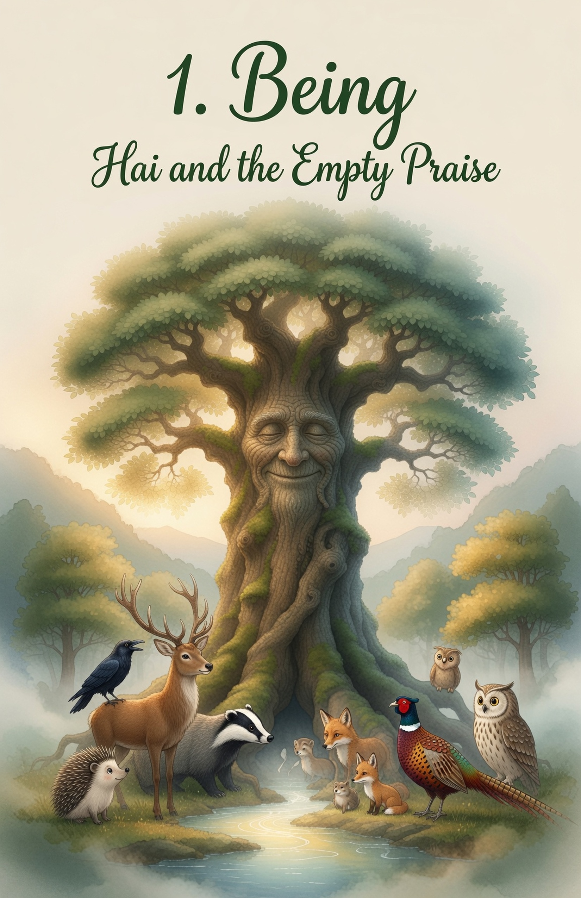
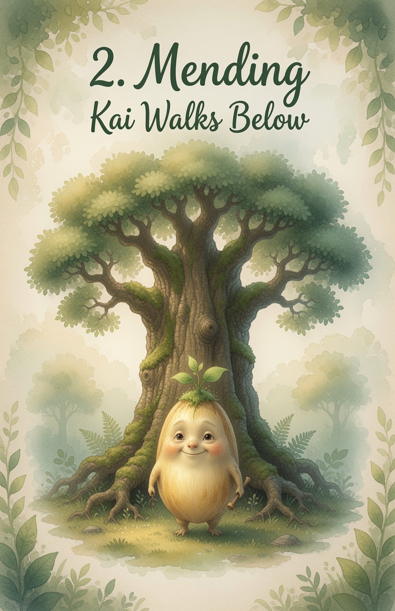
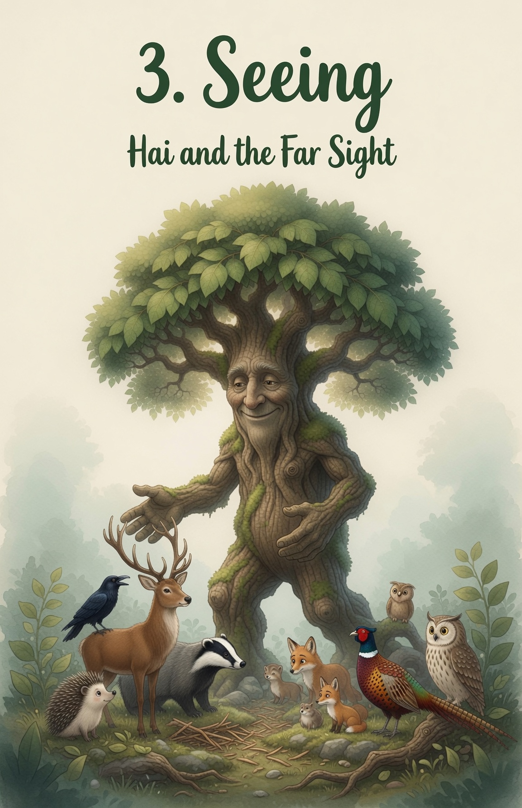

For every life that grows toward the light,
and every hand that reaches down to lift.
And for every empty cheer
that still needs true seeing,
every high place
that still needs mending below,
and for every living water
that finds the lowest root.
With thanks to Original Tall Tellers:
J.R.R. Tolkien "The Lord of the Rings"
Ted Prior "Grug"
and every quiet seed that learned to walk

Chapter One - Being
Hai and the Empty Praise

Hai Ikthiss ruled the forest from atop the tall tree.
He was the first tree in the valley.
When the valley was empty, he stood alone.
Rain found him first.
Then grass.
Then birds.

Soon the valley filled with life.
A stag lifted his antlers and called,
“Lord Ikthiss is the tallest!
We are lucky he stands for us!”
Everyone cheered.
No one looked up into his eyes.

A badger ambled up, solid and strong.
“Lord Ikthiss is the strongest root!”
he said. “Everyone thank the tree!”
They thanked the shade.
They thanked the height.
They did not thank the heart inside the wood.

A raven called from a branch.
“Look how grand our Lord Ikthiss is!
So high! So giving!”
The praise grew loud as rain.
But Hai felt a hollow place
high in his middle,
like a cup no one had filled.

He could have asked for more cheers.
He could have shaken his branches
until every creature bowed lower.
He did not.
He only listened to the spring
and felt the hollow cup wait.
Something in him wanted a hook
to the ground — a living join —
not more noise from below.

That night Hai sat with the stars in his leaves.
He let the hollow cup stay.
He did not fill it with louder praise.
He did not tip it onto anyone else.
Slowly the hollow softened,
like dry earth when first water finds it.
He began to understand it.

Next morning the valley still cheered.
Hai Ikthiss still gave shade and fruit and quiet rain-catch.
Nothing big had changed outside.
But everything felt clearer inside.
He was beginning to know
what the hollow cup was for.
It was not for collecting praise.
It was for pouring himself down.

He spent the day sending extra water
to the smallest roots and thirstiest ferns.
When he finished he smiled a tree-smile.
The gifts were large.
The thanks were loud.
The knowing was enough.
From that day, when the hollow cup tried to grow again,
Hai stayed still until it became quiet.
He just stayed Hai.
And he began to plan a smaller way.

Chapter Two - Mending
Kai Walks Below

Hai Ikthiss ruled the forest from atop the tall tree.
Then one quiet morning he climbed down.
He left the crown empty of his face
and walked the ground as a living walking seed.
The animals found him among the melons.
“Who are you?” they asked.
“You can call me Kai,” he said,
and smiled a patient seed-smile.

That afternoon his friend, a young hedgehog named Pip,
hurried through the garden looking behind him
and knocked over the best melon vine.
The big melon split open on the ground.
Seeds and sweet juice spilled everywhere.

Pip froze.
His spines trembled.
“I ruined it,” he whispered.
“You will be angry. Everyone will be angry.”
Some wood folk gathered.
“Make him go away,” muttered a fox.
“He should bring three new melons,” said a stoat.

Kai looked at the broken vine.
He looked at Pip’s worried eyes.
He did not raise his voice.
He did not point his finger.
He picked up a digging stick
and began to make soft earth ready.
“Come,” said Kai gently.
“We plant new seeds together.”

Pip blinked.
Then he came close.
Together they planted.
Together they watered.
Together they built a little fence of twigs
so no one would step there again by mistake.

While they worked, Pip told Kai
he had been running because bigger creatures
had been chasing him and laughing.
He had not seen the vine.
The next days Pip came every morning.
He became the best water-carrier in the valley.
The new vines grew strong,
even stronger than the old ones,
because two friends cared for them.

When other small accidents happened
(as they always do),
Kai remembered the melon.
He helped the one who felt hurt.
He also stayed kind to the one who had done the bumping.
No one was sent away.
No one carried a long heavy hurt.
They just tended to what was broken
and the friendship felt sturdier,
right at the mended place.
Hai Ikthiss learned, walking as Kai,
that a garden, and a friendship,
do not stay alive by never breaking.
They stay alive by being gently put back together.

Chapter Three - Seeing
Hai and the Far Sight

Hai Ikthiss ruled the forest from atop the tall tree.
Two years had turned.
He was home in the crown again.
But the valley had changed its song.
Creatures who once cheered
now whispered at the roots.
“He is too high,” they said.
“What if the tall one wants too much?”

A glossy pheasant with grand tail feathers landed nearby.
“Stay low,” said the pheasant.
“Tall things fall. Grand feathers know best.”
Some younger animals nodded hard.
They always nodded when the pheasant spoke.
His fear sounded as grand as his feathers.

Later a very old owl spoke in a slow soft voice.
“I remember Kai,” he said.
“The small seed who planted with Pip.
Kind hands do not change when they grow tall.”
A few animals turned away
because the owl was not famous.
Hai listened all the way down his trunk.

Hai Ikthiss did not shout them quiet.
He did not shake the pheasant from the branch.
He stepped out of still wood
and became a walking tall tree —
long kind limbs, deep root-feet,
a face they could meet at last.
Not to tower.
To come near.

Some animals stepped back.
Pip did not.
Pip remembered the melon
and the digging stick
and the new seeds.
Hai bent like a bridge of wood and kindness.
“Come,” he said.
“Not under me.
With me.”

He lifted Pip first —
not to show power,
but to share the view.
Then he lifted the owl.
Then the ones who had feared him.
Even the pheasant, when the pheasant was ready.
Each friend rose to Hai’s height
and became a giant with him —
same face, same heart,
only the eyes now level with the far hills.

From the high quiet air
they saw the whole valley at once —
the woodland pool, the old garden,
the places praise had been loud
and the places fear had been small.
Hai felt peaceful.
He did not need the tallest cheer.
He only needed true friends
who could see as far as love can see.
As long as someone was free to say
“I was afraid”
and still be lifted welcome,
the far sight could keep walking
on many strong legs.